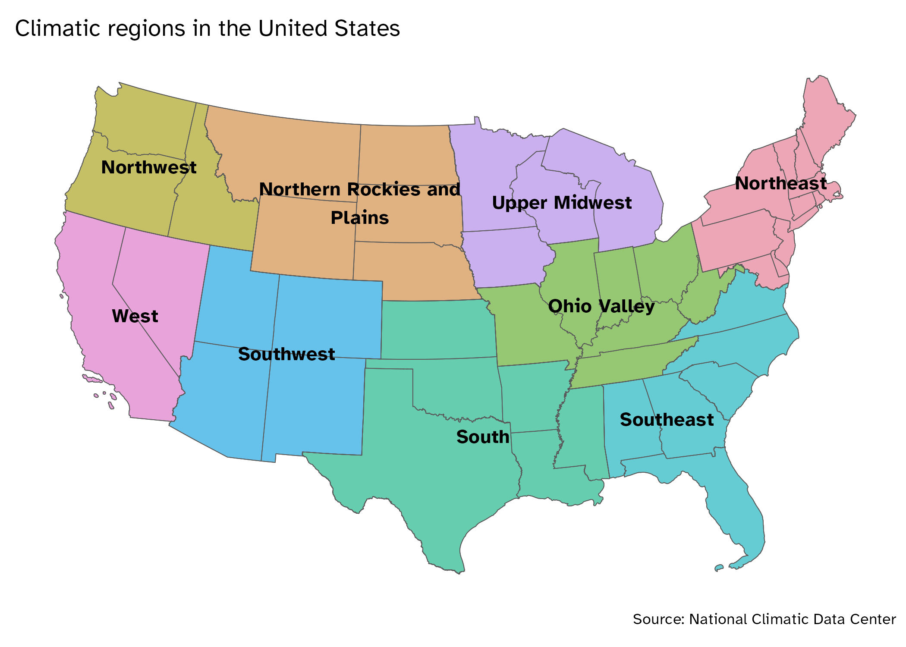
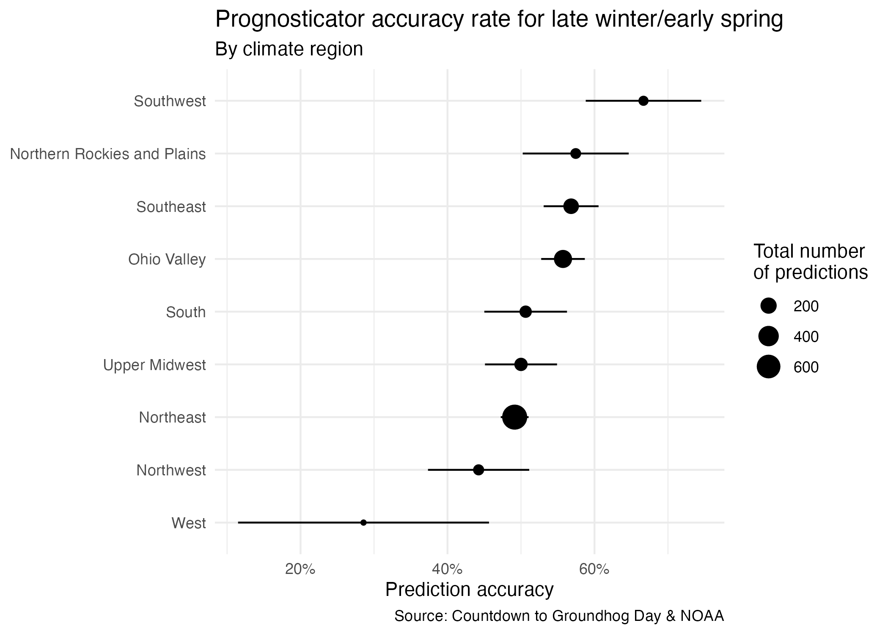

library(tidyverse)
library(scales)
library("viridis")
seers <- read_csv("data/prognosticators.csv")
weather <- read_csv("data/weather-region.csv")AE 03: Joining prognosticators
Important
Go to the course GitHub organization and locate the repo titled ae-03-YOUR_GITHUB_USERNAME to get started.
This AE is due September 12 at 11:59pm.
Prognosticator success
We previously examined the accuracy rate of Groundhog Day prognosticators.1 Today we want to work with the original dataset to understand how those accuracy metrics were generated and answer the question: How does prognosticator accuracy vary by climatic region?
Let’s start by looking at the seers data frame.
glimpse(seers)Rows: 1,710
Columns: 7
$ name <chr> "Punxsutawney Phil", "Punxsutawney Phil", "Punxsutawne…
$ forecaster_type <chr> "Groundhog", "Groundhog", "Groundhog", "Groundhog", "G…
$ alive <lgl> TRUE, TRUE, TRUE, TRUE, TRUE, TRUE, TRUE, TRUE, TRUE, …
$ town <chr> "Punxsutawney", "Punxsutawney", "Punxsutawney", "Punxs…
$ state <chr> "PA", "PA", "PA", "PA", "PA", "PA", "PA", "PA", "PA", …
$ year <dbl> 2024, 2023, 2022, 2021, 2020, 2019, 2018, 2017, 2016, …
$ prediction <chr> "Early Spring", "Late Winter", "Late Winter", "Late Wi…We have the predictions, but our goal is to make a visualization by climate region.2

Join the data frames
Let’s take a look at the weather data frame.
glimpse(weather)Rows: 5,568
Columns: 13
$ region <chr> "Northeast", "Northeast", "Northeast", "Northeast", "No…
$ state_abb <chr> "CT", "CT", "CT", "CT", "CT", "CT", "CT", "CT", "CT", "…
$ id <dbl> 101, 101, 101, 101, 101, 101, 101, 101, 101, 101, 101, …
$ year <dbl> 1909, 1910, 1911, 1912, 1913, 1914, 1915, 1916, 1917, 1…
$ avg_temp <dbl> 28.00, 29.20, 24.90, 23.15, 28.05, 22.05, 27.50, 21.55,…
$ temp_hist <dbl> 25.58333, 26.09000, 26.16667, 25.85667, 25.63333, 25.52…
$ temp_hist_sd <dbl> 4.245360, 4.241218, 4.103158, 4.124311, 3.907804, 4.016…
$ temp_sd <dbl> 4.154767, 4.154767, 4.154767, 4.154767, 4.154767, 4.154…
$ precip <dbl> 4.005, 2.520, 2.810, 3.570, 3.765, 2.920, 2.330, 3.425,…
$ precip_hist <dbl> 3.476667, 3.526667, 3.378000, 3.411000, 3.446333, 3.352…
$ precip_hist_sd <dbl> 1.1784719, 1.2081292, 1.1442431, 1.1620681, 1.2039309, …
$ precip_sd <dbl> 0.9715631, 0.9715631, 0.9715631, 0.9715631, 0.9715631, …
$ outcome <chr> "Early Spring", "Early Spring", "Early Spring", "Late W…- Your turn (2 minutes):
- Which variable(s) will we use to join the
seersandweatherdata frames?- Year
- We want to keep all rows and columns from
seersand add columns for corresponding weather data. Which join function should we use?- leftjoin
- Which variable(s) will we use to join the
- Demo: Join the two data frames and assign the joined data frame to
seers_weather.
# add code here
seers_weather = inner_join(x = seers,
y = weather,
by = join_by(year,
state == state_abb))Calculate the variables
- Demo: Take a look at the updated
seersdata frame. First we need to calculate for each prediction whether or not the prognostication was correct.
# add code here
seers_weather <- seers_weather |>
mutate(correct_pred = prediction == outcome)- Demo: Calculate the accuracy rate (we’ll call it
preds_rate) for weather predictions using thesummarize()function in dplyr. Note that the function for calculating the mean ismean()in R.
# add code here
seers_weather |>
group_by(region) |>
summarize(preds_rate = mean(correct_pred))# A tibble: 9 × 2
region preds_rate
<chr> <dbl>
1 Northeast 0.491
2 Northern Rockies and Plains 0.574
3 Northwest 0.442
4 Ohio Valley 0.557
5 South 0.506
6 Southeast 0.568
7 Southwest 0.667
8 Upper Midwest 0.5
9 West 0.286- Your turn (5 minutes): Now expand your calculations to also calculate the number of predictions in each region and the standard error of accuracy rate. Store this data frame as
seers_summary. Recall the formula for the standard error of a sample proportion:
\[SE(\hat{p}) \approx \sqrt{\frac{(\hat{p})(1 - \hat{p})}{n}}\]
# add code here
seers_summary <- seers_weather |>
group_by(region) |>
summarize(preds_rate = mean(correct_pred),
preds_n = n(),
preds_se = sqrt((preds_rate * (1-preds_rate)) / preds_n))- Demo: Take the
seers_summarydata frame and order the results in descending order of accuracy rate.
# add code here
seers_summary |>
arrange(preds_rate)# A tibble: 9 × 4
region preds_rate preds_n preds_se
<chr> <dbl> <int> <dbl>
1 West 0.286 7 0.171
2 Northwest 0.442 52 0.0689
3 Northeast 0.491 696 0.0189
4 Upper Midwest 0.5 104 0.0490
5 South 0.506 79 0.0562
6 Ohio Valley 0.557 280 0.0297
7 Southeast 0.568 176 0.0373
8 Northern Rockies and Plains 0.574 47 0.0721
9 Southwest 0.667 36 0.0786Recreate the plot
- Demo: Recreate the following plot using the data frame you have developed so far.

# add code here
seers_summary |>
mutate(region = fct_reorder(.f = region, .x = preds_rate)) |>
ggplot(mapping = aes(x = preds_rate, y = region)) +
geom_point(mapping = aes(size = preds_n)) +
geom_linerange(mapping = aes(xmin = preds_rate - preds_se,
xmax = preds_rate + preds_se)) +
scale_x_continuous(labels = label_percent()) +
labs(
title = "Prognosticator accuracy rate for late winter/early spring",
subtitle = "By climate region",
x = "Prediction accuracy",
y = NULL,
size = "Total number\nof predictions",
caption = "Source: Countdown to Groundhog Day & NOAA"
) +
theme_minimal()
- Your turn (time permitting): Make any other changes you would like to improve it.
# add your code here
seers_summary |>
mutate(region = fct_reorder(.f = region,
.x = preds_rate)) |>
ggplot(mapping = aes(x = preds_rate,
y = region,
color = preds_rate)) +
geom_point(mapping = aes(size = preds_n)) +
geom_linerange(mapping = aes(xmin = preds_rate - preds_se,
xmax = preds_rate + preds_se)) +
scale_x_continuous(labels = label_percent()) +
labs(
title = "Prognosticator accuracy rate for late winter/early spring",
subtitle = "By climate region",
x = "Prediction accuracy",
y = NULL,
size = "Total number\nof predictions",
caption = "Source: Countdown to Groundhog Day & NOAA"
) +
theme_minimal()